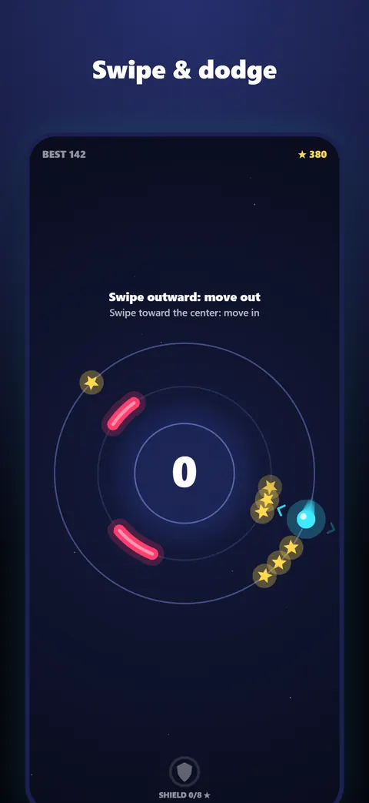
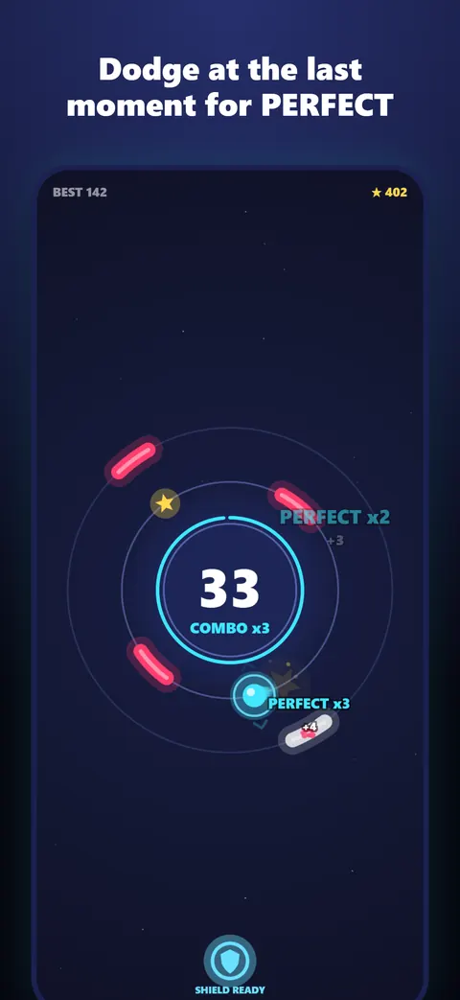
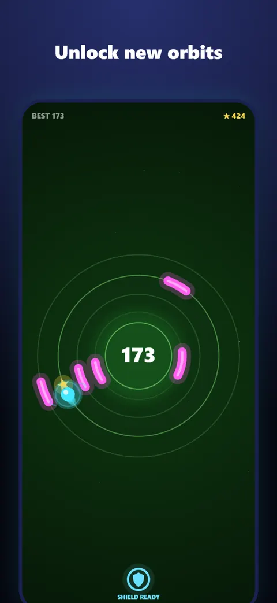
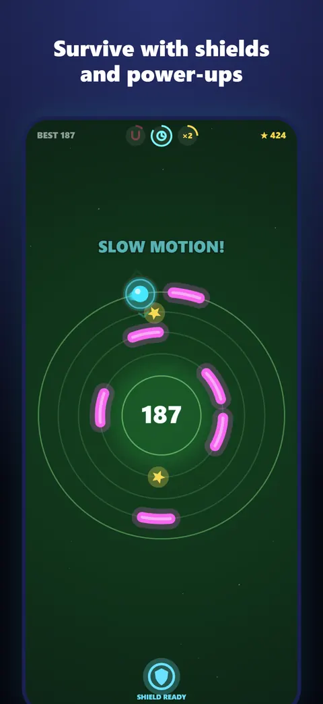

Games / Orbitap

Swipe & dodge arcade
Orbitap
The ball spins around the core. Swipe to switch orbits, dodge at the very last moment and score a PERFECT. Every run starts in seconds, and it gets deeper the better you get.




How to play
- Swipe away from the center to move out, toward the center to move in.
- It works wherever the ball is: the arrows next to it show the way.
- Avoid the obstacles and collect the stars.
- Dodge right before an obstacle to score a PERFECT and build a combo.
New orbits as you climb
- A third and then a fourth orbit unlock as your score climbs.
- Orbits start to breathe and the rhythm changes.
- Gates, ladders and shape-shifting obstacles appear.
- Go far enough and the direction starts to flip.
Power-ups
- Shield fills as you collect stars and forgives one hit.
- Magnet pulls nearby stars toward you.
- Slow Motion and Double Points.
- Spend stars to upgrade powers and unlock new balls.
A reason to come back
- Daily Challenge: everyone plays the same course that day.
- Leaderboards for all-time and today’s best.
- Daily missions and streak rewards.
Tips
- Read the arrows, not the screen edges. The ball’s arrows always show which swipe moves it outward and which moves it inward.
- Learn a new orbit layout before chasing PERFECTs. An early dodge is safe; a late one only pays off once you know the rhythm.
- Stars do double duty: they charge the Shield during a run and pay for upgrades afterwards, so grab the ones that are on your way.
- When the direction starts flipping, slow your swipes down. Most late-game crashes come from swiping twice.
- Do the daily missions first. They are small goals that keep the stars coming even on a short session.
Questions
Is Orbitap free?
Yes. Orbitap is free to play on iPhone and in the browser. Ads are optional: you watch one only when you want an extra reward.
Can I play without installing anything?
Yes. The web version at orbitap.alaystudio.app runs in any modern browser and has no ads. The App Store version adds the extras that need an app.
Does it work offline?
Yes. Runs, stars and upgrades work without a connection. Leaderboards need the internet to update.
Which languages does it support?
English and Turkish.